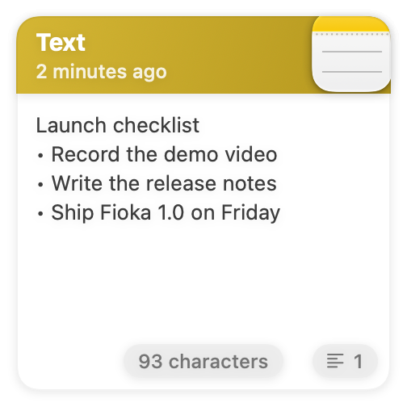
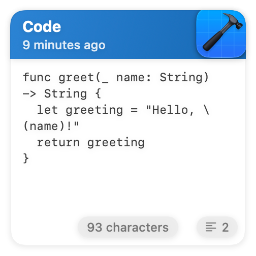
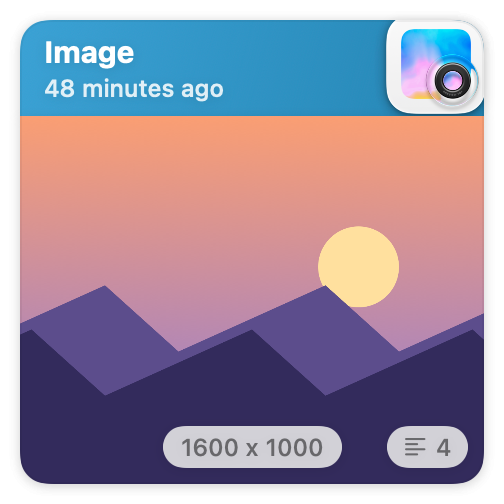
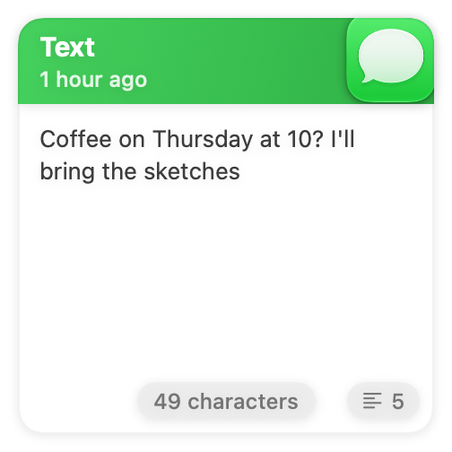
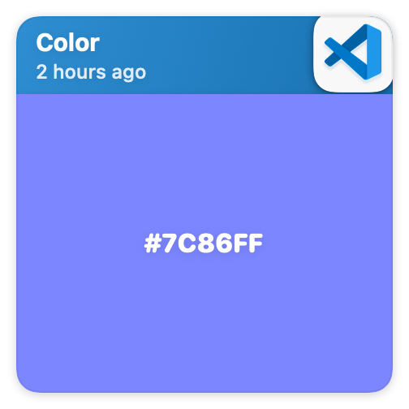
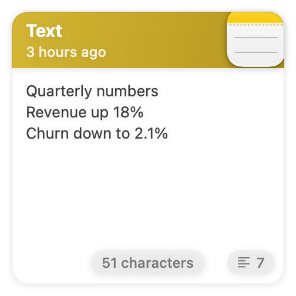
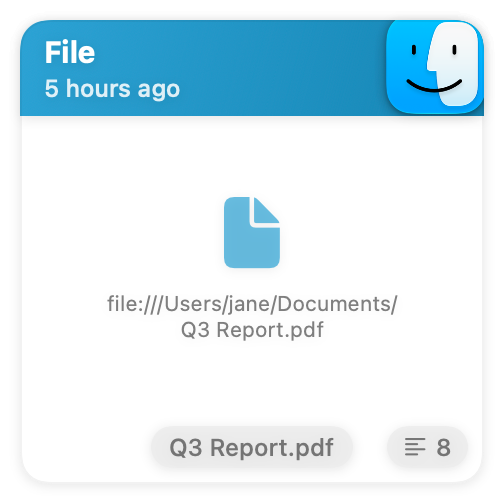
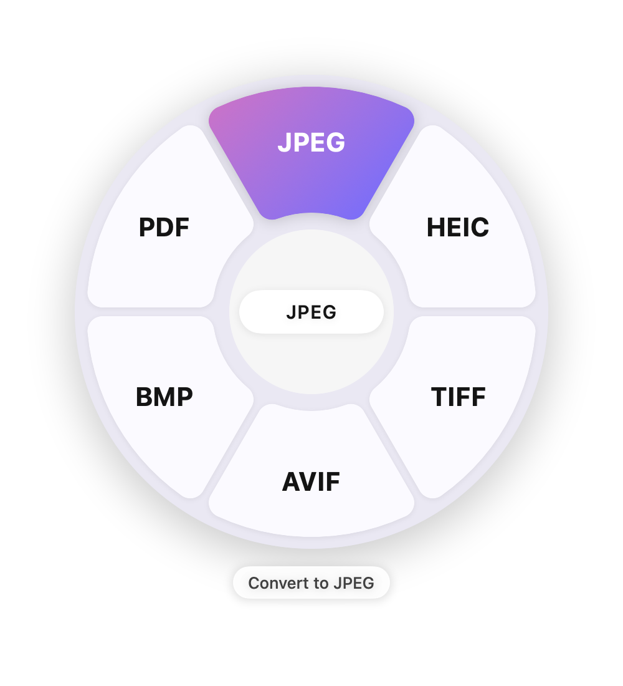
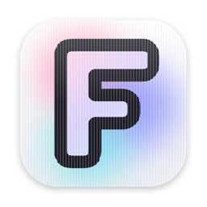
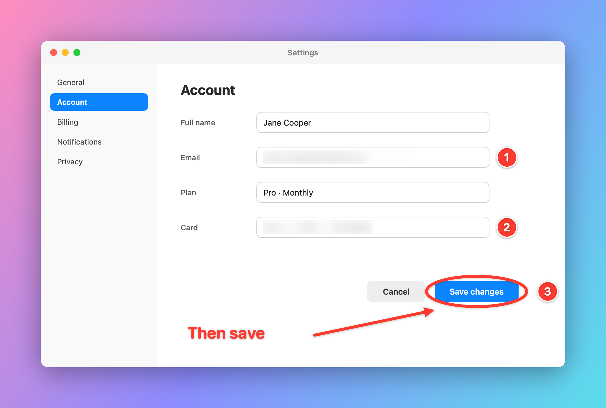

For macOS 14 and later
Copy, convert, capture.
Fioka keeps your clipboard history as cards along the bottom of your screen, converts files while you drag them, and turns screenshots into something worth sending.
Free and open source.
Press ⇧⌘V to open it again







Your clipboard, laid out as cards
Everything you copy lands in the bar: text, code, links, images, colours and files, each card tinted by the app it came from. The newest faces you; the rest wait on a drum to either side, and the arrow keys or a swipe turn it.
- ⇧⌘V
- Open the bar
- ←→
- Turn the drum
- ↵
- Paste into the app you were in
- ⌘1–9
- Pick by number
- ⌥P
- Pin a card to keep it
- ⌘K
- Convert, resize, AirDrop, reveal in Finder
Start typing to search. Nothing to click first.

Convert files mid-drag
Start dragging any file, from Finder, the desktop or another app, and tap a key. A wheel opens under the cursor. Drop on a slice, and the result is saved next to the original.
Try the keys on your keyboard, too. Esc closes the wheel in the app.
- Images
- PNG, JPEG, HEIC, WebP, TIFF, AVIF, BMP, PDF. Compress, resize, combine into one PDF, strip metadata, copy the text in them.
- Video
- MP4, MOV, M4V, GIF, audio only. Compress, 720p, mute, save a frame.
- Audio
- M4A, WAV, AIFF, FLAC, ALAC. Compress, mono, normalize.
- Pages as images, text, Word. Merge, split, rotate, compress.
- Documents
- Word, RTF, ODT, HTML and plain text, to each other and to PDF.
- Also
- Subtitles between SRT and VTT, zip and unzip, AirDrop, copy path, open in Terminal.

Try it on this desktop
Tap a file, then tap ⇧ for formats, ⌘ for tools or ⌃ for actions at the bottom of the screen, and tap a slice. On a Mac you would hold the file and press the key; you can do that here too, dragging with one finger and tapping a key with another. The photo converts for real. Double-tap a new file to save it.
Drag a file the way you would in Finder. While you are still holding it, press ⇧ for formats, ⌘ for tools or ⌃ for actions, then let go over a slice. The photo converts for real, in your browser. Double-click a new file to save it.

With the keyboard alone, select a file and press the key. You can also drop your own files on the desktop.
Screenshots, ready to send
Press ⌃⌥⌘4, pick an area or a window, and the capture opens in an editor. Mark it up, hide what is private, put it on a background, and copy it.
- Annotate
- Draw, line, arrow, box, ellipse, highlight, text, numbered steps
- Hide and focus
- Blur, pixelate, spotlight
- Frame
- Crop, gradient or blurred backgrounds, padding, shadow, corner radius, and sizes for 1:1, 4:3, 16:9 and 9:16 posts

Text from anything on screen
Press ⌘⇧2 and drag over a video, an image or an interface that will not let you select. The text goes straight to your clipboard.
Nothing leaves your Mac
Every conversion runs on macOS's own frameworks. No account, no upload, no limit on how many files you convert.
Free and open source
MIT licensed, built on Maccy by Alex Rodionov. Read the code, change it, send a pull request.
Install
For macOS 14 and later, on Apple silicon and Intel.
-
Download the .dmg from the latest release, open it and drag Fioka to Applications.
-
Open Fioka. It is not notarized by Apple, so macOS first says it cannot check it: click Done, then in System Settings, under Privacy & Security, click Open Anyway. Only the first time.
-
In the same pane, turn on Accessibility so Fioka can paste, and Screen Recording for screenshots and text capture.
-
Press ⇧⌘V. Coming from Maccy? Your history, settings and shortcuts come along.
Rather build it yourself? With Xcode 26 or later:
git clone https://github.com/n0n0bt/fioka.git
cd fioka
./install.shSigning tips and everything else are in the README.